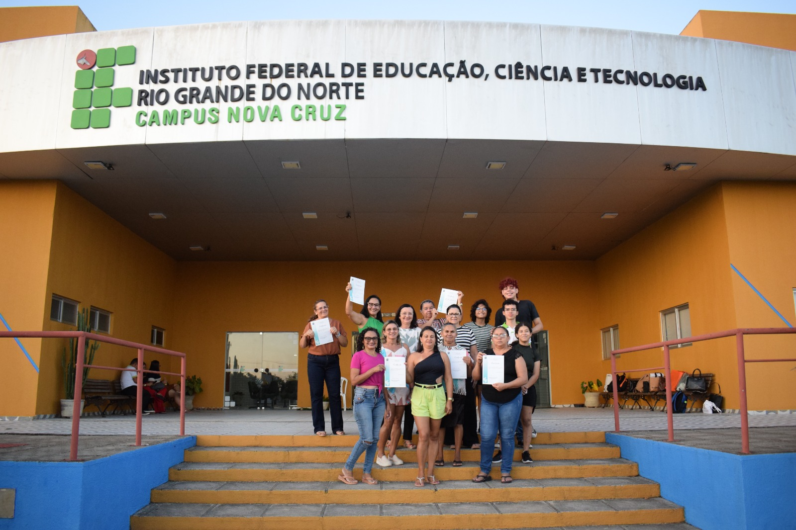

ℹ️ Saiba mais
O objetivo do projeto Conectando Gerações é alcançar pessoas da terceira idade ou com idade a partir de 50 anos, para fornecer conhecimentos básicos em microinformática, com a finalidade de proporcionar a inclusão digital dos mesmos. Será oferecido no site um curso básico de informática, dividido em 4 módulos. Módulo I - Hardware e Software; Módulo II - Sistema Operacional Windows 10; Módulo III - Pacote Office (Word, Excel e PowerPoint) Básico; Módulo IV - Fundamentos e uso da Internet. Além de exercícios que acompanharam os módulos.
O site Conectando Gerações é baseado no projeto de extensão "Informática na Melhor Idade", do Campus Nova Cruz, que teve como objetivo do projeto disseminar o conhecimento de informática em cidades vizinhas por meio de aulas presenciais no Instituto, incentivando a inclusão de pessoas da terceira idade na era tecnológica.

Imagem da conclusão do curso oferecido pelo IFRN - Campus Nova Cruz.
Existem fatores que influenciam na questão da busca por aprendizagem em informática como: evitar a exclusão, tanto da sociedade quanto de seu núcleo familiar, devido à falta de compreensão da linguagem das tecnologias.
Como também existem benefícios: a superação de dificuldades, o domínio sobre o computador, a melhora da relação intergeracional, a realização pessoal e a elevação da autoestima.
Com o avanço da tecnologia, é fundamental que as pessoas da terceira idade estejam preparadas para navegar nesse mundo digital. Por isso, o site aborda temas essenciais como o Pacote Office, redes sociais, fake news e golpes digitais.
🎧 Ouvir a leitura da página!